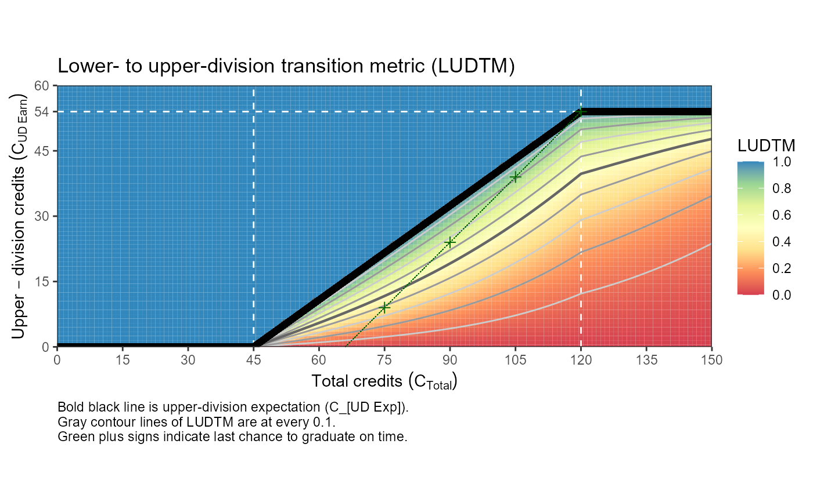

R/e_calc_ECURE_LUDTM.R
e_calc_ECURE_LUDTM.RdNSF "Expanding Undergraduate Research Participation in General Education Courses to Improve STEM Persistence and Graduation Rates" (Award #1953349)
e_calc_ECURE_LUDTM(UD = NA, T = NA, C_min = 45, C_max = 120, UDC_min = 54)number of upper division credits
total credits earned
start of UD (upper division) credits
credits required for graduation
minimum UD credits at graduation
LUDTM Lower- to upper-division transition metric
Our goal is
to develop an undergraduate student-specific metric to quantify a student's possible struggle to transition from lower-division courses to upper-division courses through fulfillment of their degree requirements
which improves early detection of students who need support and intervention
to increase each student's success by supporting a timely graduation.
We have derived a metric capturing the main desired features below, and we can continue to develop the metric to be major-specific and to be more sensitive in certain underperforming domains.
At The University of New Mexico (UNM), for most majors in order to graduate "on time" (within 4 years), an undergraduate student is expected to
earn 15 credits per semester for 8 semesters culminating in graduation at 120 credits,
begin earning upper-division (\(UD\)) credits starting after their third semester (after 45 credits), and
complete earning roughly 54 UD credits by graduation (\(C_{UD Grad} = 54\)), based on 6 credits above the 48 UD credit minimum of the UNM College of Arts and Sciences.
This translates to an average of just under 11 UD credits per semester for their fourth through eighth semesters. This description can be summarized in the upper-division expectation (\(C_{UD Exp}\)), defined as the minimum number of UD credits conditional on the total number of credits earned (\(C_{Total}\)). The piecewise function for the \(C_{UD Exp}\) can be derived from these assumptions as:
For \(C_{Total} \le 45\): \(C_{UD Exp} = 0\).
For \(C_{Total} \ge 120\): \(C_{UD Exp} = C_{UD Grad} = 54\).
For \(45 < C_{Total} < 120\): \(C_{UD Exp} = -45 * 54 / (120 - 45) + 54 / (120 - 45) C_{Total} = -31.68 + 0.72 C_{Total}\).
A student above the \(C_{UD Exp}\) line is meeting expectations, while a student's distance below the \(C_{UD Exp}\) line quantifies their struggle to transition from lower-division courses to upper-division courses.
We define the lower- to upper-division transition metric (\(LUDTM\)) to represent the degree of fulfillment (0 to 1) of the upper division expectation (\(C_{UD Exp}\)). Qualitatively, the \(LUDTM\) is the proportion of the upper division expectation (\(C_{UD Exp}\)) that as student has achieved relative to their total credits (\(C_{Total}\)) scaled to be more sensitive close to the \(C_{UD Exp}\); that is, a \(LUDTM\) of 0.5 is closer to 1 than 0 as encouragement to get "over the line" when close. Figure XXX (produced with example code) illustrates the \(LUDTM\).
The LUDTM needs two numbers of credits to date to be calculated: the student's total credits (\(C_{Total}\)) and their number of UD credits earned (\(C_{UD Earn}\)). First, we calculate the proportion of the total upper-division credits completed that are required for graduation, \(p = C_{UD Earn} / C_{UD Grad}\). A common technique in logistic regression is used to rescale this ratio relative to the total credits and to make the metric more sensitive when a student is close to but under the \(C_{UD Exp}\) line. The technique is to convert a proportion \(p\) to the logit scale, \(z = logit(p) = log(p / (1 - p))\), then perform a transformation on \(z\), such as \(f(z)\), and finally, transform it back to a proportion with the logistic transformation, \(p_{new} = logistic(f(z)) = exp(f(z)) / (1 + exp(f(z)))\). Next, we rescale \(p\) so that the logit transformation will be defined at the extremes of 0 and 1, \(p_s = p * 0.98 + 0.01\), which shrinks the interval \([0,1]\) to \([0.01,0.99]\). Then, on the logit scale, we include a penalty \(z = logit(p_s) - ((C_{Total} - C_min)/(C_max - C_min))^2\), where \(C_min=45\) and \(C_max=120\) are the expected total number of credits for starting and completing the UD course requirements. This ratio is used to scale the effect of the total number of credits, \(C_{Total}\), and this quantity is then squared to impose and increasingly stronger penalty as \(C_{Total}\) increases, representing the increasing difficulty of making up more UD credits later in the student's career for a timely graduation. Finally, we transform this quantity back to a proportion with the logistic transformation, \(LUDTM = logistic(z)\).
# Example: UD=15 starting your senior semester gives:
e_calc_ECURE_LUDTM(UD = 15, T = 90)
#> [1] 0.3762629
## Plot
# Constants
C_min = 45 # start of UD credits
C_max = 120 # graduation
UDC_min = 54 # minimum UD credits at graduation
xlim = c(0, 150)
ylim = c(0, 60)
interval = 15
dat <-
expand.grid(T = seq(xlim[1], xlim[2], by = 1)
, UD = seq(ylim[1], ylim[2], by = 1)
, LUDTM = NA
)
for (i in 1:nrow(dat)) {
dat$LUDTM[i] <-
e_calc_ECURE_LUDTM(UD = dat$UD[i], T = dat$T[i], C_min, C_max, UDC_min)
}
last_chance <-
tibble::tibble(
T = seq(C_max, C_max - UDC_min, by = -15)
, UD = seq(UDC_min, 0, by = -15)
, LUDTM = NA
)
for (i in 1:nrow(last_chance)) {
last_chance$LUDTM[i] <-
e_calc_ECURE_LUDTM(UD = last_chance$UD[i], T = last_chance$T[i], C_min, C_max, UDC_min)
}
library(ggplot2)
p <- ggplot(dat, aes(x = T, y = UD, z = LUDTM, fill = LUDTM))
p <- p + geom_tile()
p <- p + scale_x_continuous(breaks = seq(xlim[1], xlim[2], by = interval))
p <- p + scale_y_continuous(breaks = c(seq(ylim[1], ylim[2], by = interval), UDC_min))
p <- p + coord_equal(expand = FALSE, xlim = xlim, ylim = ylim)
p <- p + geom_vline(xintercept = c(45, 120), linetype = 2, colour = "white")
p <- p + geom_hline(yintercept = c(UDC_min), linetype = 2, colour = "white")
p <- p + scale_fill_distiller(palette = "Spectral", direction = 1, na.value = "white"
, breaks = seq(0, 1, by = 0.2), limits = c(0, 1))
p <- p + geom_contour(color = "gray80", binwidth = 0.10)
p <- p + geom_contour(color = "gray60", binwidth = 0.20)
p <- p + geom_contour(color = "gray40", binwidth = 0.50, size = 0.8)
p <- p + geom_segment(aes(x = xlim[1], y = ylim[1], xend = C_min , yend = ylim[1])
, colour = "black", size = 2)
p <- p + geom_segment(aes(x = C_min , y = ylim[1], xend = C_max , yend = UDC_min)
, colour = "black", size = 2)
p <- p + geom_segment(aes(x = C_max , y = UDC_min, xend = xlim[2], yend = UDC_min)
, colour = "black", size = 2)
p <- p + geom_segment(aes(x = (C_max - UDC_min), y = ylim[1], xend = C_max, yend = UDC_min)
, colour = "darkgreen", linetype = 2, size = 0.1)
p <- p + geom_point(data = last_chance, mapping = aes(x = T, y = UD), shape = 3
, colour = "darkgreen", size = 2)
p <- p + theme_bw()
p <- p + labs(title = "Lower- to upper-division transition metric (LUDTM)")
p <- p + labs(subtitle = NULL)
#p <- p + labs(caption=paste0( bquote(Bold~line~is~upper-division~expectation~(C[UD Exp])), "."
p <- p + labs(caption = paste0( "Bold black line is upper-division expectation (C_[UD Exp])."
, "\nGray contour lines of LUDTM are at every 0.1."
, "\nGreen plus signs indicate last chance to graduate on time."
))
p <- p + labs(x = bquote(Total~credits~(C[Total])))
p <- p + labs(y = bquote(Upper-division~credits~(C[UD~Earn])))
#p <- p + labs(x = "Total credits (C_Total)")
#p <- p + labs(y = "Upper-division credits (C_[UD Earn]")
p <- p + labs(fill = "LUDTM")
p <- p + theme(plot.caption = element_text(hjust = 0)) # Default is hjust=1, Caption align left
print(p)
